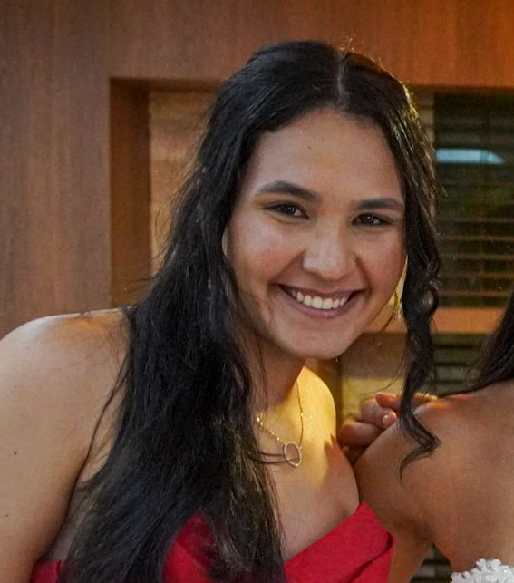
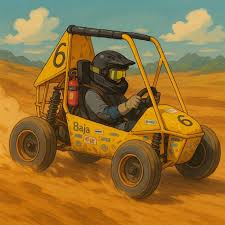

Mentalidade analítica para resolver problemas de negócio. Graduanda em Engenharia de Produção com formação técnica em logística. Com atuação em gestão de projetos, consistente em análise de dados, construção de dashboards e suporte direto à tomada de decisão estratégica em ambientes de alta exigência.
Tenho vivência prática liderando equipes, organizando processos e transformando dados dispersos em indicadores claros que orientam ação. Atuo na interseção entre tecnologia, gestão e negócios, com forte interesse em estratégia, BI e marketing orientado a dados. Busco entregar valor por meio de clareza analítica, organização e visão de longo prazo.
A equipe representa o SENAI CIMATEC na competição Baja SAE Brasil. Atuo como Gerente de Gestão, liderando o núcleo administrativo e estratégico do time.

Painel desenvolvido com dados estratégicos para demonstrar competências em BI, análise de indicadores e suporte à decisão. Filtros interativos e KPIs dinâmicos.
📊 Receita mensal (R$ mil) · Interatividade via filtros
Engenharia de Produção – SENAI CIMATEC (2022 - 2027)
Técnico em Logística – SENAI CIMATEC (Concluído 2020)
Aberta a oportunidades em análise de dados, BI, gestão e projetos estratégicos. Responderei rapidamente.